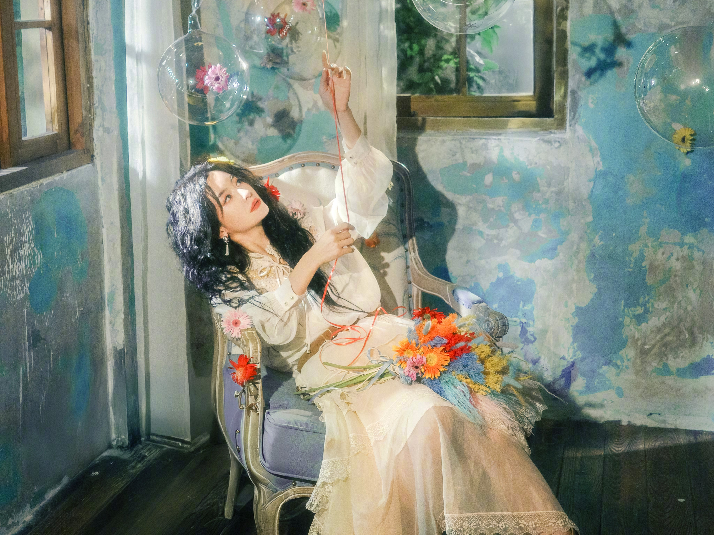
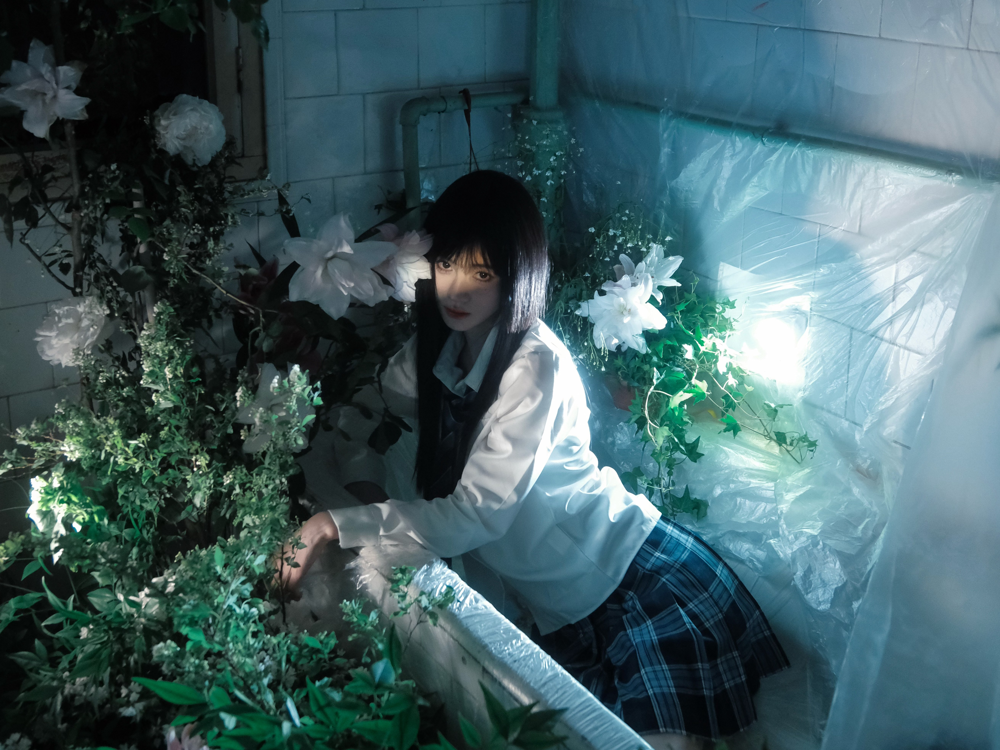
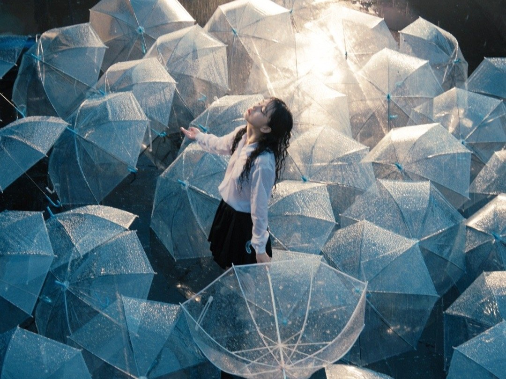
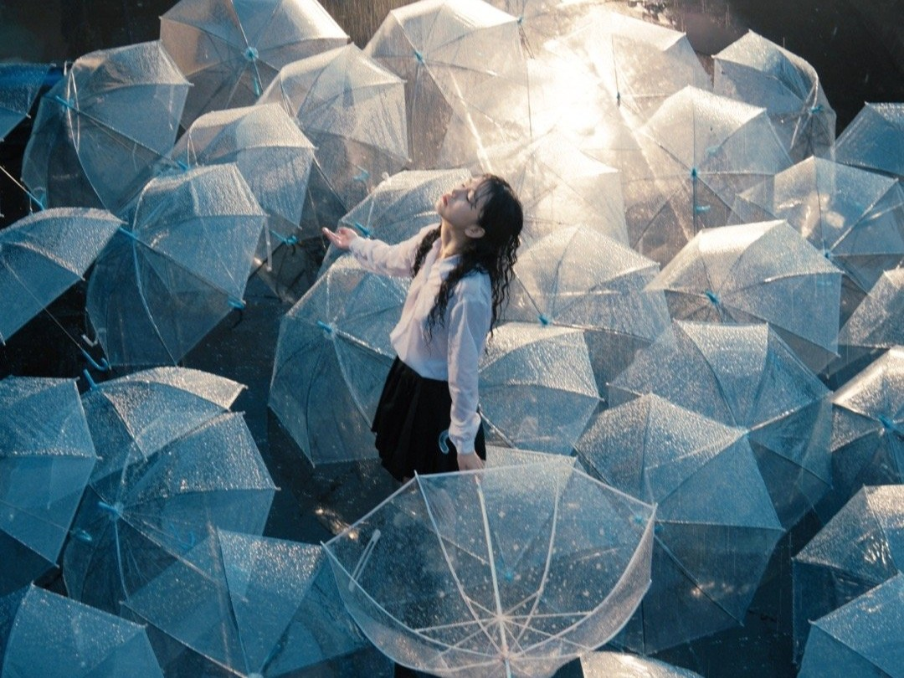
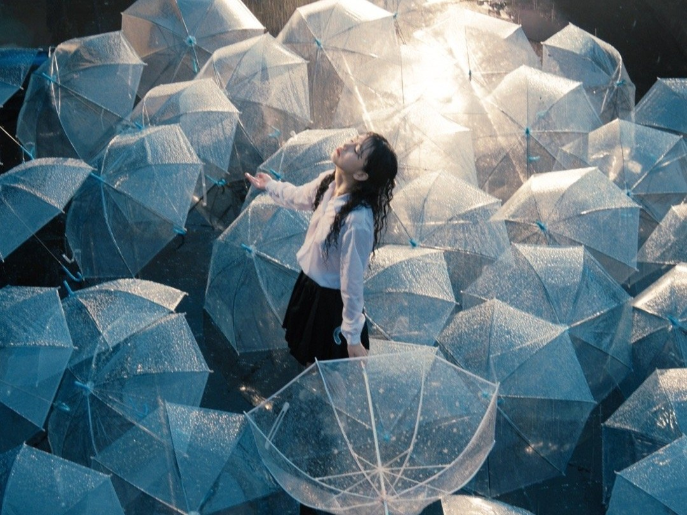

 


Photography
镜头里的万千世界
通过轻盈的瀑布流呈现每一个故事。尽情期待后续精彩内容发布。
来自摄影师：小口天子
从来不是简单的角度选择，每一张仰起的脸庞就像是在逃离地心引力。

《雪山》— 日暮时分的粉色光带，将冰雪染成温柔的琥珀色。

《林雾》— 光影穿透云雾，唤醒沉睡的森林。

《暮色》— 潮汐与霞光交织成梦境，留白处藏着海风的味道。

《星轨》— 喧嚣都市的夜空，也有星辰缓慢旋转。

《沙漠旅人》— 风塑造的线条，在阳光下闪耀。
《冰川星空》— 星空与冰川交织，像极了时间的长河。